Intro to GitHub:
No Terminal Required
teaching-materials.org/github-web
Welcome!
What we will cover in this workshop
- Git and GitHub: What's the difference?
- Your GitHub profile and account settings
- Understanding repositories
- Working with files in the GitHub web UI
- Making a your first pull request
- Finding and choosing projects and communities
Git and GitHub:
What's the difference?
Git is a Version control system software that you can run on your own computer, or on a server

GitHub is a Web-based service for storing, sharing, and collaborating on projects managed with Git
Your GitHub Profile and Account Settings
Your GitHub Profile
Like a social media profile for your code

Your User Account Settings
You can add information and change settings for:
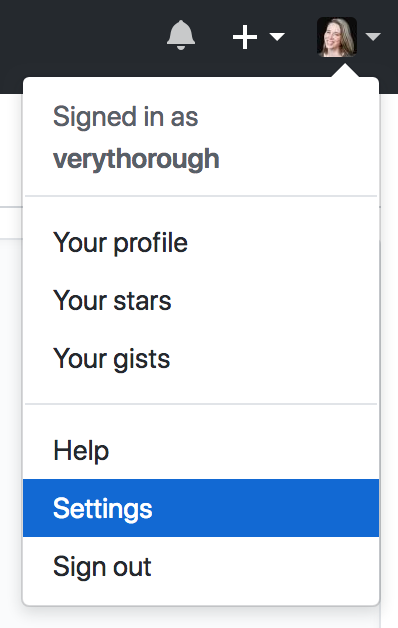- your profile
- email preferences
- security and two-factor authentication
- blocking other users
Try It!
- Create a new account at github.com.
- Verify your email address.
- Edit your profile.
- Adjust your other account settings.
- Check out your profile page at
github.com/{your-username}.
Understanding Repositories
What's a Repository?
A repository (or repo, for short) is Git's name for a project, like a folder. It contains all of the project's files and stores each file's revision history.
On GitHub, each repository has its own page, and includes several other features for collaboration.
Anatomy of a Repo
The header of a GitHub repository page includes features that GitHub adds on to Git.

Anatomy of a Repo
The file listing displays information common to all Git repositories.

Each row contains:
- a file or folder name
- a description of the last change
- when the last change was made
Anatomy of a Repo
GitHub treats some files as special based on their filenames.

These files are designed to help with collaboration.
Pair Up!
Pair with a neighbor to explore the contents of the teaching-materials repository
- Look at the files with capitalized filenames. What do you think is the purpose of each one?
- Open files with different file extensions. How does GitHub display them?
- Find the most recently changed file. Find the least recently changed file.
- Bonus: find the code for this slide.
Working with files in the GitHub web UI
Creating a repo
Click the ➕ icon in the upper right corner, and select New repository.
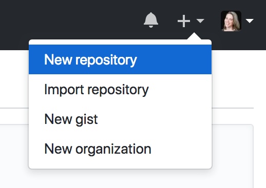Creating a repo
Give the repo a name and a description.
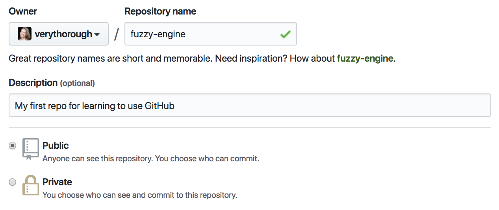Private repositories require a paid account.
Creating a repo
GitHub can create some files for you.

- README: an intro page for your project
- .gitignore: useful when using Git on your local machine
- license: terms for other people using with your code
Adding a file
In the button bar above the list of files, select Create new file.
Enter a filename, and your file contents.
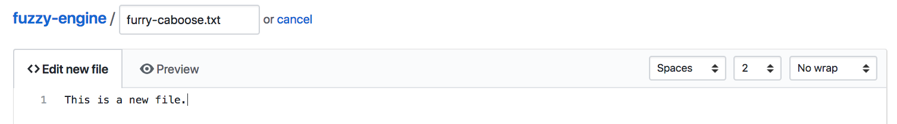Adding a file
When you're finished, write a commit message and commit the new file.
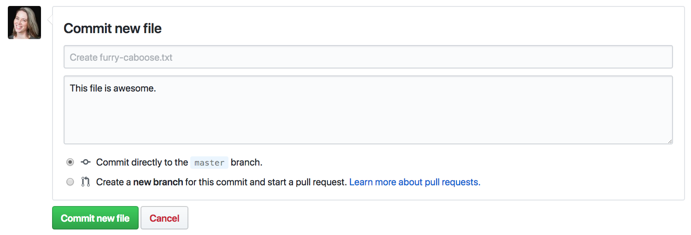We'll talk about committing directly or creating a new branch later.
Uploading a file
You can also upload files that aren't text, like images or videos. (These are called binary files.)
In the button bar above the list of files, select Create new file.
Drag or select one or more files, and commit the changes as you would for creating a file.
Editing a file
Navigate to the file you want to change, and select the pencil icon at the top of the file.
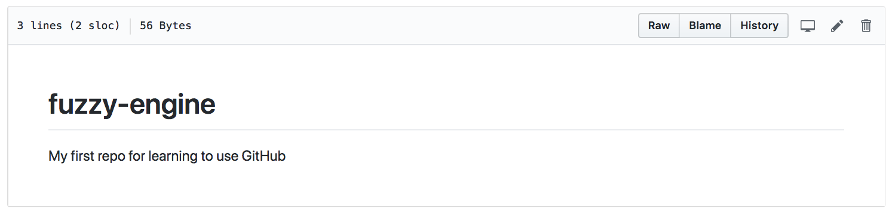The editor view will open, where you can edit the text and commit your changes.
Writing in Markdown
Markdown is a simple markup language that many tools use to convert to styled text.
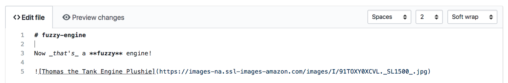Different symbols translate to different HTML elements.
Writing in Markdown
GitHub displays all markdown files as styled HTML. Select the Preview changes tab to see how your file will look.
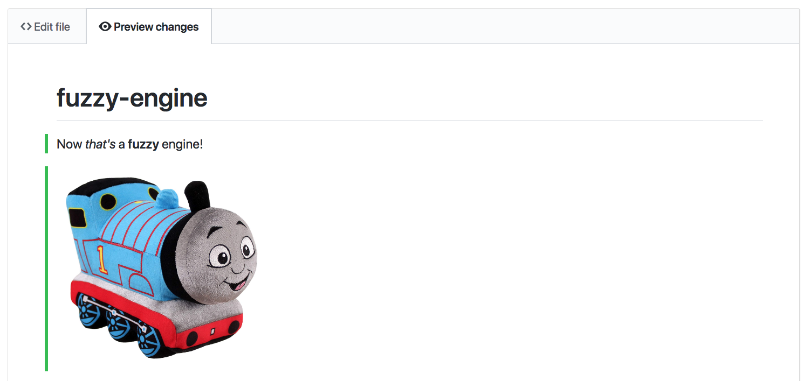Putting files in folders
When you create or edit a file, its path is displayed next to the filename.
At the beginning of the filename field, type the name of the folder followed by /.
The folder will be added to the path.
You can do this multiple times, and you can delete folders from the path, too.
Creating "empty" folders
Git tracks files, so an empty folder is a path that leads nowhere. Git won't track empty folders, and you can't create them in GitHub.
Work around this by creating an empty, throwaway file and giving it a new path.
It's a common convention to call this file .keep.
You can delete this file later when you've added other files to the folder.
Moving binary files
Binary files like images can't be rdited in GitHub, so you can't change their paths!
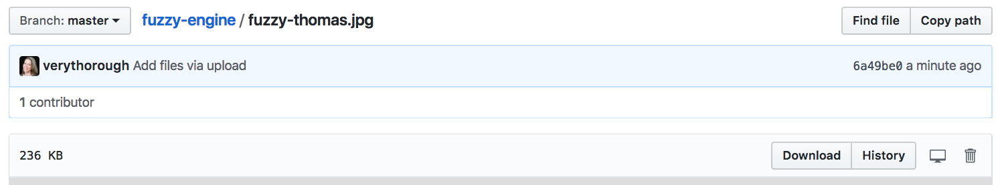Instead, you'll have to:
- Download the file.
- Delete it from the repo.
- Navigate to the new folder.
- Upload the file again.
Try it!
- Create a new repo, with a README and a license.
- Edit the README, and commit your changes.
- Create a new markdown file with some formatted text.
- Create an empty folder titled, "images".
- Navigate to the images folder, and upload an image to it.
- Add your new image to one of your markdown files. (Hint: use a relative link.)
Forks and Pull Requests
Forking a repo
When you try to make changes in a repo you don't control, GitHub will make a fork.
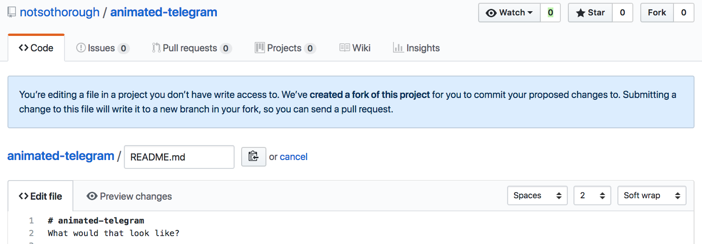You can also make a fork by selecting the Fork button at the top of the page.
Forking a repo
Forking makes a copy of the repo in your account, where you can make changes to your copy however you like. A fork remembers where it came from.
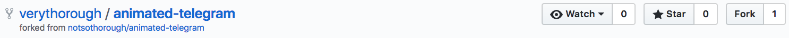However, new changes in the original repo (usually called the "upstream") will not affect your fork, and changes in your fork will not affect the upstream repo.
Proposing changes
You can propose that changes on your fork be applied to the upstream repo by opening a pull request.
If you try to edit a file in the upstream repo, it will give you this option automatically.
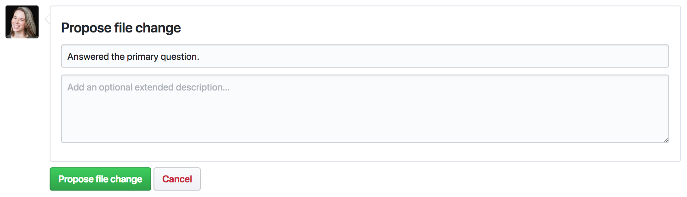Comparing changes
Before you make a pull request, GitHub will compare the changes you're proposing (on the 'head') against the repo you want to change (the 'base').
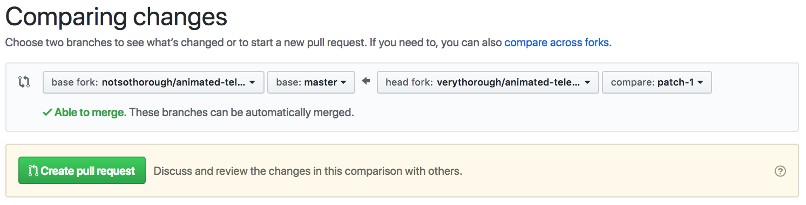The comparison looks at a specific branch in each repo. (More on those later.)
Comparing changes
The comparison also includes a detailed view of all of the changes, called a diff.
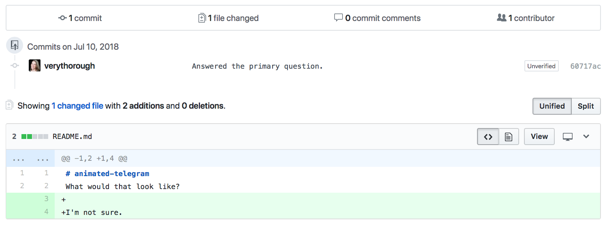Creating the pull request
When you create a pull request (or PR), you add a comment, explaining your change to the maintainers.
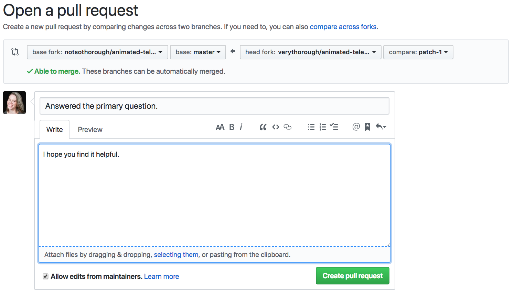Branches
Branches are kind of like forks inside a repo. You can work in a branch without affecting the rest of the repo. For example, the "patch-1" branch has changes that the "master" branch does not.
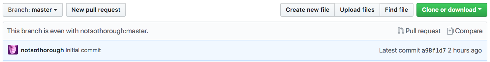 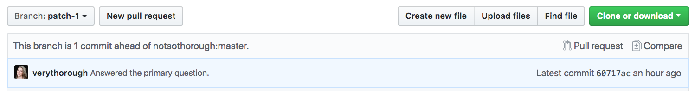Creating a branch
To start making a group of changes together, create a new branch.
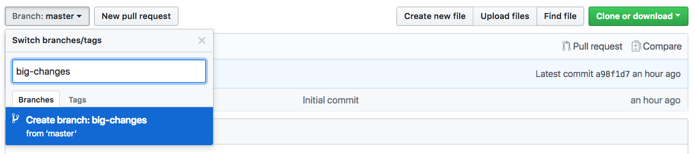The new branch will include all of the changes from the branch you were on when you created it. Usually you will create the branch from "master," or the main branch.
Committing to a branch
With your new branch selected, you can make changes as usual. When you commit new changes, you'll have the option to commit to the new branch.
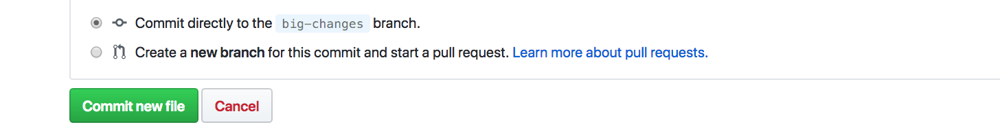When you start committing to the new branch, GitHub will show a prompt to start a new pull request. You can ignore this until you've made all of your changes.
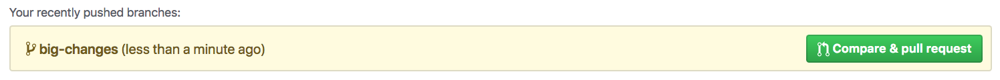Your multi-file PR
When you create the pull request from your new branch, the diff will show all commits, to all files.
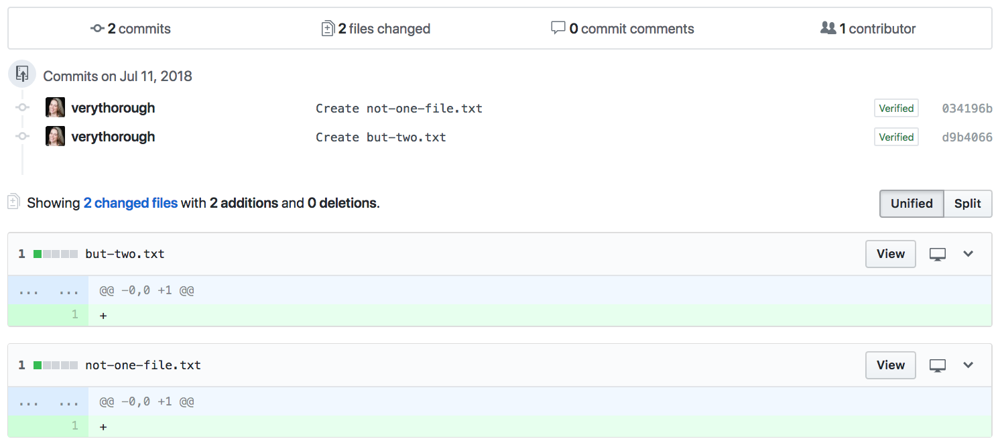Try it!
Pair with a classmate and exchange links to the repos you made in the last exercise.
- Visit your partner's repo and have a look around.
- Edit the README, and following the prompts to fork and propose the change in a PR.
- Open your fork of the repo, and create a new branch from "master".
- On the new branch, upload an image file.
- On the same new branch, add a new markdown file with your new image and some text.
- Open a pull request to merge your new branch into your partner's "master" branch.
Commenting on PRs
A pull request page opens on the Conversation tab, with the first comment created by the sumitter.
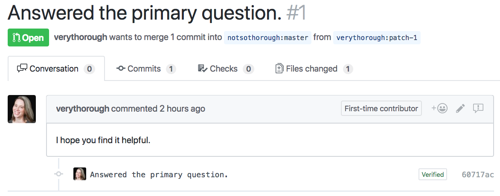Anyone can see and comment on a PR.
Making line comments
The Files changed tab shows the diff. If you hover on a line, a ➕ button will appear. Click it to add a comment attached to that line.
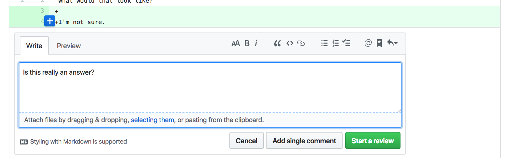You can add it as a single comment, or start a review.
Creating a review
When you start a review, all of your line comments will be saved until you're ready to post them together. Reviews also indicate approval status.

Try it!
- Open your repo and find your classmate's second PR (the one with the new text file and image).
- Make a line comment in the text file, requesting a change. Make the comment part of a review.
- Complete your review, adding a summary comment and selecting Request changes.
Accepting feedback
It's totally normal for a pull request to require changes.
Don't be afraid to ask questions for clarification.
Most maintainers are friendly and helpful. If you encounter one who isn't, consider finding a different project worthy of your contributions.
Pushing changes to a PR
You can edit files in a PR directly from the View changes tab.
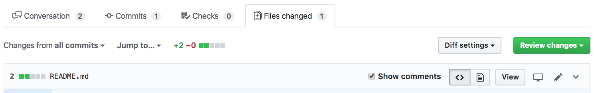Pushing changes to a PR
To create or upload files for your PR, edit the PR branch in your fork.
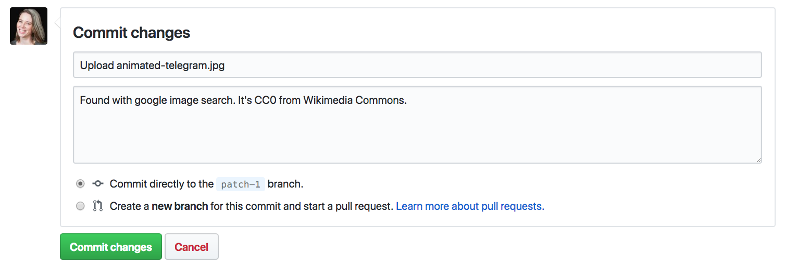All commits to that branch will be included in the PR automatically.
Try it!
- Go to your partner’s repo and read the new comments on your PR.
- Make any requested changes.
- Comment on the PR to let your partner know that you've made changes and are ready for re-review.